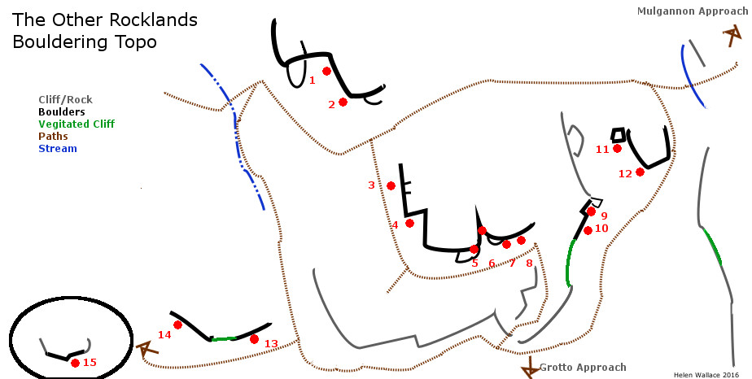

Rocklands Wexford Bouldering topo.
This is a small selection of boulders outside Wexford town, in and around the Rocklands crag. This is distinct to the Rocklands park which despite potential is a victim of anti-socail behavior. The rock is genrally solid quartsite though there are some bits of slate which is less durable. The problems are easy and worthwhile for those in the area. landings are genrally good except for the nothing.
| 1 | wall | 4 | ||
| 2 | arete | 5 | ss | |
| 3 | crack | 4 | ss | |
| 4 | wall | 5 | ||
| 5 | slab | 5 | avoid dabbing the block | |
| 6 | chimney | 3 | handy decent | |
| 7 | wall | 5+ | start as for 8 | |
| 8 | wall | 6a | poppy's wall | strait up |
| 9 | overhang | 5+ | up using slight grove | |
| 10 | overhang | 6c? | baked beans | |
| 11 | frigde | 3 | falcor | ss |
| 12 | arete | the nothing | heal hook up as far as you fancy | |
| 13 | wall | 3-5 | ||
| 14 | overhang | 6a | jugfest ss right and head left + up | |
| 15 | 5 | line of least resitance (check decent first) |